7210E70 REAR TRIM
- Path
- Procedures > 72 PANELS AND FRAME > 7210 REMOVING REFITTING > 7210E EXTERNAL PARTS > 7210E70 REAR TRIM
- Kind
- repair procedure (removal / refitting; the operation number is the code)
- Applies to
- all engines; all production periods
- Interactive page
- https://sloeber94.github.io/elrnDB-fUlss/en/#/179007977
Applies to: all engines; all production periods
Applies to: all engines; all production periods
 Removing
Removing
 Refitting
Refitting- Work on the component hightlighted previously making sure that the equipment illustrated below is available.
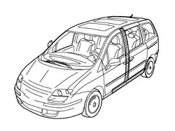
Applies to: all engines; all production periods
1. central pillar
2. Centre pillar reinforcement
3. Centre pillar box section
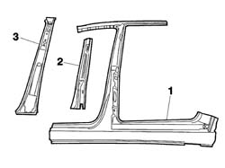
Applies to: all engines; all production periods
- Check that the components connected are not distorted by checking the bodyshell alignment measurements using suitable equipment (gauges, templates or jigs).
- Trace the cutting line as illustrated in the diagram
- Prepare the edges to be welded and protect them using thermoweldable primer
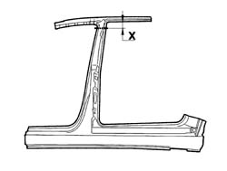
Applies to: all engines; all production periods
- Trace the reference for the temporary cutting as illustrated in the diagram.
- Proceed with cutting (A) the centre pillar
- Reduce the spot welds illustrated (B) using a chamfering machine.
- Remove the lower part of the centre pillar.
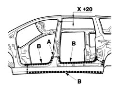
Applies to: all engines; all production periods
- Reduce the spot welds illustrated using a chamfering machine.
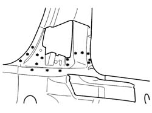
Applies to: all engines; all production periods
- Proceed with the cutting (C) as indicated and then grind the weld beads (D).
- Remove the component
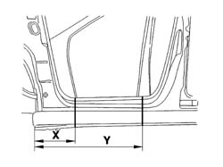
Applies to: all engines; all production periods
- Prepare the edges to be welded and protect them using thermoweldable primer
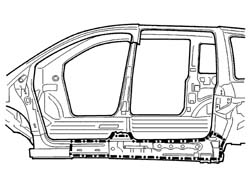
Applies to: all engines; all production periods
- Prepare the edges to be welded and protect them using thermoweldable primer
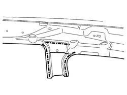
Applies to: all engines; all production periods
Refitting
Removing- Position the centre foot lining, the reinforcement for the centre foot and the centre foot and fasten with self-locking clamps then, after having checked that the alignment and the clearances are correct, trace the definitive cuts, remove the centre foot lining, the centre foot reinforcement and the centre foot and proceed as described below.
- Make the definitive cuts
- Prepare the edges to be welded and protect them using thermoweldable primer
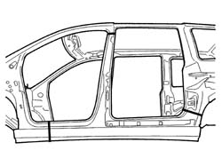
Applies to: all engines; all production periods
- Proceed with the MIG fill welding (E), then spot weld as illustrated in the diagram and then grind the welds using a disc grinder.
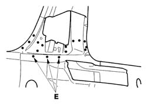
Applies to: all engines; all production periods
- Proceed with the MIG welding as illustrated in the diagram.
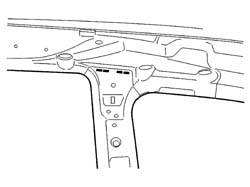
Applies to: all engines; all production periods
- Apply structural adhesive as illustrated in the diagram (F).
- Apply sealing and welding compound as illustrated in the diagram (G)
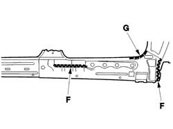
Applies to: all engines; all production periods
- Fit the centre reinforcement and the centre foot then continue with the MIG welding (H) and then use a spot welder as illustrated in the diagram followed by a disc grinder for grinding the welds.
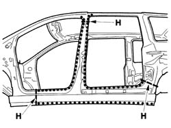
Applies to: all engines; all production periods
- Finish off by surfacing the area illustrated in the diagram.
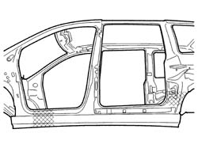
Applies to: all engines; all production periods
- Apply finishing compound using a brush starting from the bottom of the vehicle.
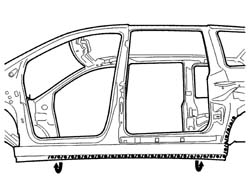
Applies to: all engines; all production periods
- Check that the welded component is correctly positioned.
- Apply electro-galvanizing paint to the ground parts.
- Proceed with applying wax and foam to the box sections.